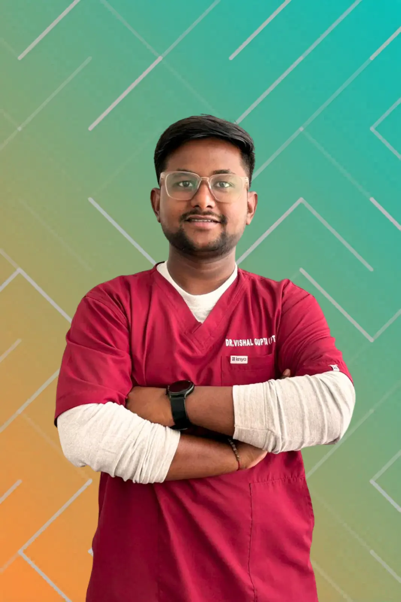

Dr. Vishal Gupta
Clinical Physiotherapist
About
Dr. Vishal Gupta
Dr. Vishal Gupta is a Clinical Physiotherapist at Apricot Care Physiotherapy and Wellness, Kharadi, Pune. He completed his Bachelor of Physiotherapy (BPTh) from Dhole Patil College of Physiotherapy, Pune, and has supplemented his academic training with an internationally recognised certification in Clinical Neurodynamic Solutions (NDS) from Australia.
At Apricot Care, Dr. Vishal works with adult neuro patients and musculoskeletal cases, treating conditions including stroke, spinal cord injuries, and post-surgical neurological presentations. His clinical focus is on improving mobility, balance, and functional independence through personalised, evidence-based therapy programs. His approach is structured around each patient's current ability, with clear rehabilitation goals and practical progression milestones built into every plan.
Conditions Commonly Supported
- Stroke recovery and post-stroke weakness
- Spinal cord injury rehabilitation
- Post-surgical neurological recovery support
- Musculoskeletal injuries affecting movement and strength
- Walking difficulty, balance issues, reduced mobility, and fall risk concerns
- Nerve mobility restrictions and sensorimotor dysfunction
What to Expect in Your Rehab Plan
Practice Location
Dr. Vishal Gupta practices at Apricot Care Physiotherapy and Wellness, Kharadi, Pune, providing physiotherapy and neuro rehabilitation services for:
- Adult Neuro Rehabilitation
- Stroke Recovery
- Spinal Cord Injury Rehabilitation
- Musculoskeletal Injury Management
- Balance and Gait Training
- Post-Surgical Neurological Recovery
- Functional Independence Training
- Clinical Neurodynamics Assessment and Treatment
Frequently Asked Questions
What conditions does Dr. Vishal Gupta treat?
He works with adult neuro patients and musculoskeletal cases, including stroke, spinal cord injuries, post-surgical neurological recovery, balance issues, and movement restrictions.
What is Clinical Neurodynamics (NDS)?
Clinical Neurodynamics is an evidence-based approach to assessing and treating nerve mobility restrictions. Dr. Vishal holds a certification in NDS from Australia, which he applies to improve sensorimotor function and movement quality.
How soon should rehabilitation start after a stroke?
It depends on medical stability and the treating doctor's advice. The first session typically focuses on assessment and establishing safe, realistic rehabilitation goals.
How many sessions will I need?
The number of sessions depends on the condition, its severity, and individual recovery progress. A realistic plan is discussed after the initial assessment.
Do you provide a home exercise plan?
Yes, practical home routines are shared after each phase of therapy to support steady progress between clinic sessions.

Book an Appointment
Book An Appointment To Kickstart Your Recovery Journey
Seamless On-site Rehabilitation
Visit Apricot Care in Kharadi, Pune to meet Dr. Vishal Gupta and begin your structured physiotherapy and neuro rehabilitation plan.
Personalised Online and Home Care Services
Begin with a personalised consultation for online or home-based physiotherapy. Our team will support your recovery without you having to leave home.